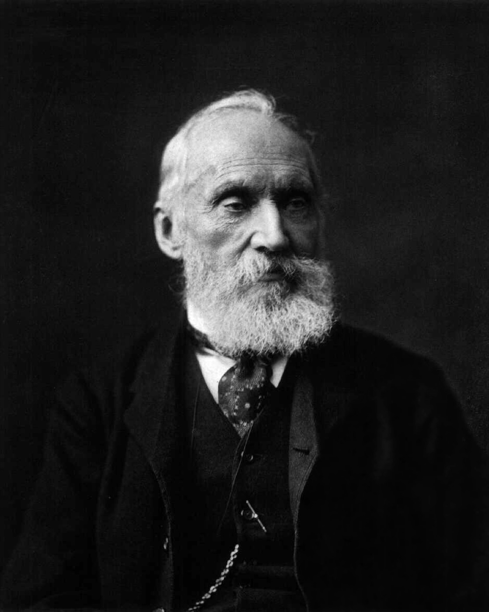
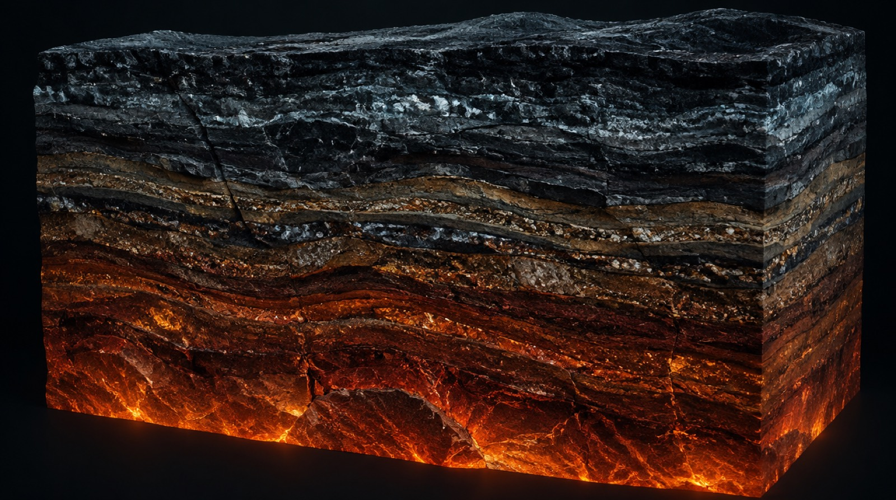
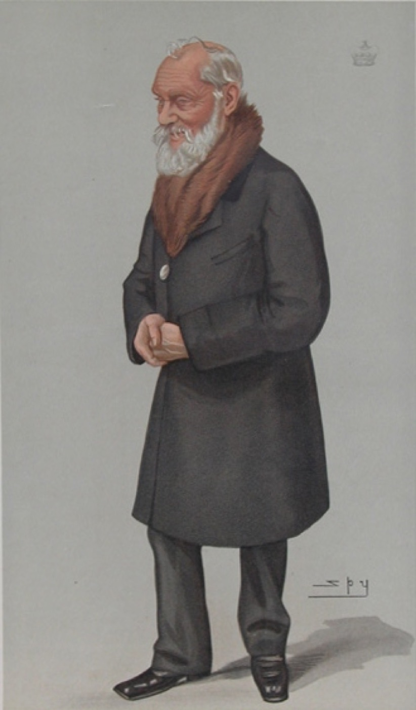

William Thomson · 1824–1907
KELVIN
The man who found the bottom of temperature
Kelvin in 60 seconds
- Born
- Belfast, 26 June 1824
- Prodigy
- Professor of Natural Philosophy at Glasgow — at age 22
- Physics
- Gave us absolute temperature and the kelvin itself
- Law
- Stated the Second Law of thermodynamics, 1852
- Engineer
- Made the transatlantic telegraph work — knighted for it in 1866
- Wrong
- Got the age of the Earth badly wrong, by a factor of ~50
Buried in Westminster Abbey, beside Newton.
Act I · The making of a physicist
Belfast to Glasgow, by way of a prodigy
He matriculated at university at ten, published his first physics paper at sixteen under a pseudonym, and held a professor's chair at twenty-two. None of that was an accident.
William Thomson was born in Belfast on 26 June 1824. His father, James Thomson, was a Ballynahinch farmer's son who had taught himself enough mathematics to become a professor of it — and who taught his own children at home, personally and relentlessly. When their mother Margaret died in 1830, William was six; the household that raised him afterwards was his father's, and his father's subject was the family language.
In 1832 James took the mathematics chair at the University of Glasgow and moved the family there. Two years later, aged ten, William matriculated at that same university. This is less absurd than it sounds — the Scottish universities of the period admitted very young students to general classes, and he was not taking a degree at ten. What matters is the exposure: he was sitting in university lectures before most children finish primary school.
At sixteen he read Joseph Fourier's Théorie analytique de la chaleur — the mathematics of how heat diffuses through matter. An established professor had publicly attacked it. Thomson wrote a defence and published it that same year under the initials "P.Q.R.", because a schoolboy correcting a professor in print seemed unwise under his own name. He was right and the professor was wrong.
That book never left him. Fourier's heat equation is the direct ancestor of nearly everything in this project: the cooling of the Earth, the smearing of a telegraph signal down three thousand kilometres of cable, and the sum of sine waves that became a brass tide-predicting machine. He found his life's mathematics at sixteen and spent sixty years applying it.

Historical photograph — William Thomson, Lord Kelvin. Photo by Messrs. Dickinson, London. Public domain, Wikimedia Commons.
Peterhouse, Cambridge, 1841–45. He came out Second Wrangler in the brutal mathematical Tripos — a famous near-miss — but won the Smith's Prize, the examination that tested original thinking rather than speed. He also won the Colquhoun Sculls in 1843, the university's single-sculls championship; he was a serious athlete, not only a serious student.
Paris, 1845. He spent a year in Henri Victor Regnault's laboratory doing precision measurement by hand. Cambridge had made him a mathematician; Regnault made him an experimentalist. The combination is the whole of his career — he is remembered equally for a thermodynamic scale and for a galvanometer.
He was not a caretaker professor. At Glasgow he founded what is generally counted as Britain's first physics teaching laboratory — a room where students did experiments themselves rather than watching demonstrations. It is an unglamorous contribution next to absolute zero, and arguably it changed physics education more than any single result he published.
Illustration.
Act I · The making of a physicist
The world that made him
Kelvin worked in the middle of the most aggressively industrial decades in British history — and the question of whether that pushed his physics or merely paid for it has a genuinely mixed answer.
The word "scientist" was coined in 1833, when Thomson was nine. Before that, and for most of his own life, his job title was natural philosopher — and his chair at Glasgow was in Natural Philosophy until long after he had made physics a profession. He lived through the transition from science as a gentleman's pursuit to science as a salaried, institutional, and above all commercial activity, and he personally profited from it more than almost any scientist of his century.
The backdrop: steam and iron everywhere; the Great Exhibition of 1851 advertising British manufacturing to the world; famine in Ireland, where he was born, killing a million people between 1845 and 1852; Darwin's Origin of Species detonating in 1859; and — decisive for Kelvin — a global telegraph boom in which investors were willing to sink enormous capital into cables across oceans, provided someone could make them work.
Physics was expected to be useful. The prestige of a result was tied to the machinery it improved — engines, telegraphs, ships, guns. Kelvin fitted that expectation so well that he was knighted for a cable and made a lord partly on the strength of roughly seventy patents. The irony is that his most durable contribution, the absolute temperature scale, was worth nothing commercially at all.
So: necessity or happenstance? Neither, cleanly. His output splits into three groups with genuinely different origins — work the market demanded, work that came out of pure theory with no application in sight, and work that happened because he met the right person at the right meeting.
Pure curiosityCommercial necessity
Choose any of his major works to see what actually drove it. Three of the eight were pure theory with no market waiting for them; four were built because money was waiting; one happened because of a friendship.
What this shows: each work placed by what actually caused it, not by how important it turned out to be. The pattern is the answer to the question — his reputation was built on commercial engineering, but his permanent contribution to physics came from the end of the axis nobody was paying for.
Illustration.
Act II · The physics
The scale with a bottom
In 1848, Kelvin threw out the thermometer and defined temperature from a heat engine instead — and the ratio he found had nowhere to go below zero.
Temperature had no agreed lower bound. Every thermometer measured some substance's own behaviour — mercury's length, a gas's pressure — and different substances disagreed with each other away from the points where they happened to be calibrated together. There was no reason to think "cold" had a bottom at all.
Kelvin's 1848 paper, "On an Absolute Thermometric Scale Founded on Carnot's Theory of the Motive Power of Heat," sidestepped the substance problem entirely. Sadi Carnot had shown that an ideal heat engine's efficiency depends only on the temperatures of its two reservoirs — not on whether it runs on steam, air, or anything else. Kelvin used that fact to define temperature itself, independent of any material.
The result was a scale with a floor. Since no engine can be more than 100% efficient, the ratio Kelvin defined implies a coldest possible temperature — the point at which a perfect engine would extract all the heat as work. He placed it at −273.15 °C. Every kelvin above that is exactly one Celsius degree wide; only the zero point moved.
The physics
A reversible (Carnot) engine moves heat Q₁ out of a hot reservoir and Q₂ into a cold one while doing work. Carnot's theorem says the ratio Q₁⁄Q₂ is the same for any reversible engine running between the same two reservoirs — it can only depend on the reservoir temperatures. Kelvin defined temperature to make that ratio explicit:
That equation alone fixes a scale, up to one free constant (the size of a degree) and one free zero point — no mercury, no alcohol, no calibration substance required. Because an engine's efficiency η = 1 − Q₂⁄Q₁ can never exceed 1, T can never go below zero on this scale:
Since the SI redefinition of 2019, the kelvin no longer depends on any physical sample at all — it is fixed by the Boltzmann constant, k = 1.380649×10⁻²³ J/K, exactly.
vrms (N₂) ≈ 517 m/s
What this shows: each dot is a nitrogen molecule; its drift speed is drawn from KelvinPhysics.vRms at the selected temperature. Drag the scale or tap a landmark — motion visibly stops as the temperature approaches 0 K.
Four samples of gas, each a different amount, so each line has a different slope. Solid where it's measured; dashed where it's extrapolated into the cold, past where any real gas would have liquefied.
What this shows: KelvinPhysics.charlesVolume(T, slope) plotted for four different slopes at once. Drag the control — every slope changes, but the line always crosses zero volume at exactly −273.15 °C. That shared crossing point is how Kelvin located absolute zero without ever reaching it.

Illustration.
Act II · The physics
The Second Law
Heat never flows uphill on its own — and that one quiet rule sets a hard ceiling on every engine that has ever been built.
Heat was caloric — a weightless, indestructible fluid that flowed from hot bodies to cold ones and was simply conserved, the way water finds its level. "Energy" was not yet a unifying idea joining heat, motion and work together.
In 1851, Kelvin stated what a heat engine can never do: run in a cycle, draw heat from a single reservoir, and turn all of it into work with nothing else changing. Rudolf Clausius had stated an equivalent rule from the other direction: heat never passes from a colder body to a hotter one by itself. The two statements describe the same law from opposite sides.
The following year, in "On a Universal Tendency in Nature to the Dissipation of Mechanical Energy," Kelvin pushed the idea further: every real process loses some usable energy as heat that can never be fully recovered as work. Run that forward across the whole universe and you get an unsettling prediction — a slow, one-way drift toward a state where nothing more can happen: the "heat death" of the universe.
No engine, working in a cycle, can take heat from a single reservoir and convert all of it into work with no other effect. Some heat always has to be dumped somewhere colder.
Heat never flows from a colder body to a hotter one on its own. Making it happen — as a refrigerator does — always costs outside work.
The physics
Run a reversible engine between a hot reservoir at Th and a cold one at Tc — both absolute, in kelvin — and its efficiency has a hard ceiling set by nothing but those two temperatures:
Because Tc can never be negative, η can only reach 1 if Tc = 0 K — and chapter 03 already showed absolute zero is a limit nothing ever reaches. Every real engine, forever, leaks some heat to its surroundings instead of converting all of it to work. That unavoidable leak is the "dissipation" in Kelvin's 1852 title.
No net work here — the "cold" reservoir isn't colder than the hot one.
What this shows: KelvinPhysics.carnotEfficiency(T_h, T_c) drawn live as the width of the work arrow (top) against the two heat arrows either side of the engine. Drag T_c toward zero — efficiency climbs toward 100%, but never arrives, because T_c itself can never reach 0 K.

Illustration.
Act II · The physics
Joule–Thomson
Push a real gas through a plug from high pressure to low, and — unlike the ideal gas of a textbook — its temperature actually moves. Which way depends on one number.
Gases were assumed to behave ideally — their temperature indifferent to pressure alone with nothing else changing. There was no known, practical route to liquefying air, and refrigeration beyond ice and salt was barely a science at all.
Kelvin met James Prescott Joule, a Manchester brewer's son the physics establishment was largely ignoring, at a British Association meeting in 1847. The friendship that followed produced, in 1852, the Joule–Thomson effect: force a real gas through a porous plug or valve — a throttle — from high pressure to low, with no heat exchanged and no work extracted, and its temperature changes anyway. An ideal gas would not notice. A real one does, because real molecules pull on each other.
Whether the gas cools or warms depends on its temperature going in, relative to a threshold called the inversion temperature. Below it, throttling cools the gas — the working principle behind every modern refrigerator, air liquefier, and the liquid-helium magnet inside an MRI scanner.
The physics
Modelling the gas with the van der Waals equation, the Joule–Thomson coefficient — how much the temperature moves per unit drop in pressure, at constant enthalpy — works out to:
μJT is positive — cooling — whenever T is below the inversion temperature, and negative — heating — above it. That threshold falls out of the same expression:
For the nitrogen modelled below (van der Waals a = 0.1408 Pa·m⁶/mol², b = 3.913×10⁻⁵ m³/mol, Cp ≈ 29.1 J/(mol·K)), that threshold works out to ≈ 866 K — well above room temperature, which is why throttling nitrogen at ordinary starting temperatures cools it.
ΔT ≈ 0.00K for a representative pressure drop · inversion temperature ≈ 866K
Modelling nitrogen (N₂) as a van der Waals gas.
What this shows: particles cross the porous plug from high pressure (left) to low pressure (right); their speed after crossing is drawn from the sign and size of KelvinPhysics.jouleThomsonCoefficient at the chosen inlet temperature. Drag the slider through ≈866 K and watch the state flip from cooling to heating.
Act II · The physics
3,000 km of copper
The map made it look like an engineering problem. The physics was a differential equation — and getting the physics right is the difference between a cable that died within weeks and one that made him a knight.
A signal placed on one end of a wire was assumed to arrive at the other end effectively instantly, the way it does on a short line. No one had reckoned with 3,000 kilometres of cable acting as one continuous capacitor and resistor at once — or with how badly that combination would blur a signal over such a distance.
The first transatlantic cable, laid in 1858, worked only briefly. Its chief electrician, Wildman Whitehouse, refused to believe retardation was a real physical effect and drove the line with brutally high induction-coil voltages to try to force signals through faster — voltages that destroyed the cable's insulation. Kelvin's approach for the second attempt, laid successfully in 1866, was the opposite: tiny, safe currents, paired with a detector sensitive enough to read them anyway. It worked. He was knighted that same year, and the patents that followed made him rich.

Illustration.
The physics
A long submarine cable behaves like a distributed resistor-capacitor line: every metre of copper core has resistance, and every metre of insulated cable sitting in the ocean is a tiny capacitor against the seawater around it. A signal doesn't arrive as a sharp step — it diffuses in, the same mathematics Fourier used for heat spreading down a bar. The delay to reach a useful fraction of full strength scales as:
— the law of squares. Double the cable's length and the delay does not double. It quadruples. That single relationship is why the geometry of the Atlantic made this a genuinely hard problem and not just a long one — and why Whitehouse's brute-force voltage made things worse rather than better: more voltage doesn't fight diffusion, it just stresses the insulation.
What this shows: KelvinPhysics.cableStepResponse traced along the cable's length at the current simulated instant, using representative mid-19th-century values for resistance (~2 Ω/km) and capacitance (~0.4 µF/km). Double the length and press Send again — the delay quadruples: the law of squares, live.
Getting a signal down the cable was only half the problem. On the receiving end, that smeared, barely-there trickle of current had to be read at all. Kelvin's answer was the mirror galvanometer — an "optical lever" sensitive enough to turn a current far too small to feel into a spot of light anyone could read.
The physics — the mirror galvanometer
A tiny mirror, suspended on a fine fibre inside a magnet coil, tilts by an angle proportional to the current through the coil: θ = current × sensitivity. Because the angle of incidence equals the angle of reflection, tilting the mirror by θ swings the reflected beam by twice that — 2θ — before the beam even leaves the mirror. Send that doubled angle down a long "arm" to a distant scale, and a swing far too small to read directly becomes a spot of light anyone can see move:
The long arm and the angle-doubling are two independent multipliers stacked on top of each other — which is how a submarine cable's microamp-scale trickle became a legible signal at all.
What this shows: a current tilts a tiny mirror by θ = current × sensitivity; because the angle of incidence equals the angle of reflection, the reflected beam swings by 2θ (KelvinPhysics.galvanometerDeflection) — doubling the effect before it even reaches the long arm to the scale. "Play message" keys the mirror in real Morse code and decodes it live above.

Historical photograph — Thomson's mirror galvanometer. Public domain, Wikimedia Commons.

Historical photograph — the Great Eastern, which laid the successful 1866 cable. Public domain, Wikimedia Commons.

Historical illustration — Kelvin's early siphon recorder, from the 1911 Encyclopædia Britannica. Public domain, Wikimedia Commons.
Act II · The physics
The instruments
Roughly seventy patents came out of one restless mind — a compass, a sounder, a bridge circuit, a recorder. Two of them are showpieces: a generator with no battery, and a brass machine that predicts the tide.
Tide tables were built by tedious manual harmonic analysis, redone by hand for every port, or by local rules of thumb that broke down anywhere they hadn't been measured directly. There was no machine that could simply add up a tide's ingredients and trace the answer.
Between the cable years and his death, Kelvin patented roughly seventy inventions: a mariner's compass corrected to work on iron-hulled ships and adopted by the Royal Navy; a sounding machine that read ocean depth without stopping the ship; the Kelvin bridge, for measuring very low resistances; the siphon recorder, which inked incoming cable signals onto paper automatically. Two of the instruments below repay a closer look, because each one makes an abstract idea physically watchable.

Illustration.
The physics — the water dropper
Two streams of water drops fall through metal induction rings on their way to two collecting cans — but each ring is wired not to the can below it, but to the opposite can. Any tiny, accidental charge imbalance between the two sides induces a charge on the drops falling through the nearer ring, and because of the cross-wiring, those drops carry that charge into the can that reinforces the original imbalance. The imbalance grows the very drops that grow it — positive feedback — and it runs away exponentially until a spark discharges it:
τ is the feedback time constant, set by the drop rate. There is no battery anywhere; the entire voltage comes from induction feeding on itself.
What this shows: KelvinPhysics.dropperVoltage(t, τ) climbing in real time from the cross-connected induction rings; the brass flash is the spark that discharges it, after which the cycle restarts from zero. Faster drop rate, shorter τ, quicker sparks.
The physics — the tide-predicting machine
The tide at a given port is, to good approximation, a sum of independent sinusoidal "constituents" — one driven by the Moon's dominant pull, one by the Sun, others by the small elliptical wobbles of each orbit — each with its own fixed period and a locally measured amplitude:
Kelvin's machine synthesised that sum mechanically, one pulley per constituent, decades before anyone had an electronic computer to add sine waves for them. Below, with only M2 raised (the Moon's main constituent, period 12.42 h) and S2 (the Sun's, period 12.00 h) — two frequencies close enough together to beat against each other — a slow spring/neap rhythm appears in the sum that neither constituent has on its own.
What this shows: KelvinPhysics.tideSum of the six real tidal constituents, traced over 30 days. With only M2 and S2 raised (the default above), the spring/neap envelope emerges entirely from two steady sine waves at close frequencies — KelvinPhysics.beatPeriod puts that cycle at 14.77 days, matching the real ≈14.77-day spring/neap cycle. Raise the other four constituents to see the curve gain the finer texture of a real tide table.

Illustration.

Historical illustration — a contemporary depiction of Kelvin's tide-predicting machine, reduced to four constituents. Public domain, Wikimedia Commons.
Act III · The limits
Where Kelvin was wrong
Kelvin spent forty years insisting the Earth was too young for Darwin. He was wrong — and almost everything you have been told about why he was wrong is also wrong.
Geologists worked with an Earth of effectively unlimited age — "no vestige of a beginning," as Hutton had put it — and simply assumed there was as much time available as their observations required. Nobody had tried to put a hard physical bound on it. Kelvin's contribution was to insist the question had a calculable answer at all.
In 1862 he treated the Earth as a ball of rock that started molten and has been losing heat to space ever since. Measure how fast temperature rises as you descend a mine — the geothermal gradient — and Fourier's heat equation tells you how long the cooling has been running. He used an initial temperature of about 3,900 °C from melting experiments and a gradient of roughly 1 °F per 50 feet, and got tens of millions of years. Over the following decades he narrowed his published estimate to about 20–40 million.
This was a problem for Darwin, who needed vastly longer for natural selection to do its work. Kelvin pressed the point for the rest of his life, and Darwin, who could not answer the physics, privately called him "an odious spectre."
The arithmetic below is Kelvin's own. Drive it with his assumptions and you get his answer.
The physics
For a half-space that starts at a uniform temperature T₀ and then has its surface held cold, Fourier's solution gives a temperature gradient at the surface that decays as the square root of elapsed time. Invert it for the time:
where κ is the thermal diffusivity of rock and dT/dz the measured surface gradient. The mathematics is correct, and it is still the right answer to the question he asked. The failure is entirely in the premise — that heat leaves the interior by conduction alone.
Diffusivity in units of 10⁻⁶ m²/s. The radiogenic bar is illustrative — a factor of two, reflecting that radiogenic heating supplies roughly half of present surface heat loss. Even doubled, it does not close the gap.
What this shows: the sliders drive KelvinPhysics.kelvinEarthAge — Kelvin's own 1862 formula, with his own assumptions as the defaults, giving his own answer. The other two bars are not recalculations: they are the historical figure John Perry published in 1895 and the modern radiometric age, shown to scale for comparison. Push every assumption to the most generous value his contemporaries could have defended and the method still lands several times short of 4.54 billion years — because the error is in the premise, not the arithmetic.
John Perry, Kelvin's own former assistant, found it: if the deep interior can convect — churn, rather than merely conduct — heat keeps being delivered to the surface, the gradient stays steep for far longer, and the Earth can be enormously older. Perry published a figure of two to three billion years.
He did this in 1894–95 — before radioactivity was discovered. The correct objection to Kelvin was available, in print, and essentially right, years before the thing everyone credits. Perry revered Kelvin, pressed the point gently, and was largely ignored.
The story usually told is that radioactivity, unknown to Kelvin, was the hidden heat source that saved geology. It is a good story and it is mostly wrong. Radiogenic heating accounts for roughly half of the Earth's present surface heat loss — real, but not enough on its own to stretch tens of millions of years into billions.
Convection does the heavy lifting. Radioactivity is a genuine second-order correction that arrived later and got the credit.
Which brings us to the anecdote. On 20 May 1904, Ernest Rutherford spoke at the Royal Institution on radium and the age of rocks, with Kelvin — then eighty — in the audience. Rutherford's own account:
Rutherford saved himself by noting that Kelvin had bounded the age provided no new source of heat was discovered — "that prophetic utterance refers to what we are now considering tonight, radium!" — and, he reported, the old man beamed at him.
The anecdote is genuine. It is also routinely misapplied: that "no new source" caveat belonged to Kelvin's calculation of the age of the Sun, not to the Earth's cooling. The scene is true; the moral usually drawn from it is not.
What Kelvin actually demonstrates is subtler and more useful than "even geniuses make mistakes." His mathematics was correct. His measurements were reasonable. He was wrong because one premise — conduction only — was incomplete, and no amount of rigour downstream of a wrong premise can rescue it. That is the failure mode of careful people, and it is worth more to a physics student than any of his correct results.

Illustration.
Act III · The limits
Two clouds
On 27 April 1900 he stood up at the Royal Institution and named the two results his generation could not explain. Both clouds became revolutions inside five years, and he had picked exactly the right two.
The lecture was titled "Nineteenth Century Clouds over the Dynamical Theory of Heat and Light." Kelvin was seventy-five. The dynamical theory — that heat and light are both modes of motion — was the great synthesis of his generation, and he opened by saying it had two problems left.
How does the Earth move through the ether? Light was assumed to be a wave in an invisible elastic medium filling space. If so, the Earth's motion through it should be detectable — and Michelson and Morley's increasingly precise experiments kept finding nothing.
Resolved 1905 — by abandoning the ether entirely. Einstein's special relativity.
Equipartition of energy does not work. Maxwell and Boltzmann's doctrine said energy should be shared equally among all available modes. Applied to radiation in a hot cavity, it predicts the intensity climbing without limit toward short wavelengths — infinite energy from a warm oven.
Resolved 1900–05 — by quantising energy. Planck, then Einstein. Quantum mechanics.
The second cloud is the one you can watch break. Below, the classical prediction and the real one are drawn together. Out in the long wavelengths they fall away together, which is why the classical law looked perfectly healthy for as long as measurements stayed in the infrared. Move toward the short-wavelength end and the classical curve climbs straight off the top of the chart — the "ultraviolet catastrophe." Planck's curve, which assumed energy comes in discrete packets, simply turns over and comes back down, matching what every hot object in the universe actually does.
The physics
The classical Rayleigh–Jeans law follows directly from equipartition — count the modes in a cavity, give each the same energy:
As λ → 0 that diverges: the catastrophe. Planck's law instead assumes energy is exchanged in quanta of size hν, which suppresses the short-wavelength modes:
Expand Planck's for large λ and the exponential collapses to hc⁄λkBT, giving back Rayleigh–Jeans exactly in the limit — which is why the two agree where the wavelengths are long and the intensities small, and disagree without bound where they are short. The peak of Planck's curve obeys Wien's displacement law, λmaxT = 2.898 × 10⁻³ m·K, marked live below.
5772 K is the Sun's surface. The classical curve is drawn dashed; where it leaves the top of the frame, it is predicting more energy than the object has.
What this shows: KelvinPhysics.planck and KelvinPhysics.rayleighJeans plotted over the same wavelengths, with the peak from KelvinPhysics.wienPeak. Cloud II is the visible gap between the two curves — and closing it required inventing quantum mechanics.
Kelvin did not solve either problem, and he did not live to see both resolved. But the lecture is the strongest possible evidence against the thing he is most often quoted as saying — that physics was finished and only better decimals remained. He said the opposite, in public, at seventy-five, and he was right about where to look.
Illustration.
Act III · The limits
The quote he never said
The most famous thing Lord Kelvin ever said is something he almost certainly never said. It is worth knowing why the fake one spread — and which of the embarrassing ones are actually real.
Kelvin is the standard cautionary tale in physics classrooms: the great man who declared his subject finished just before it exploded. The trouble is that the quotation carrying that story has no source, and the two "wrong prediction" quotes usually filed beside it are one genuine and one invented. Checking them is not pedantry — the real record is more interesting than the myth.
"There is nothing new to be discovered in physics now. All that remains is more and more precise measurement."
No primary source exists. It is routinely dated to around 1900 and attributed to an address that does not appear in his published record. The nearest genuine statement of that sentiment belongs to Albert A. Michelson in 1894, who spoke of future discoveries lying "in the sixth place of decimals." Robert Millikan later speculated that the "eminent physicist" Michelson had in mind was Kelvin, and the guess hardened into a quotation.
It is doubly wrong: in 1900 Kelvin's actual public position was that two unexplained results were about to overturn the foundations — and he was right. See chapter 09.
"Heavier-than-air flying machines are impossible."
The wording is tidied up, but the sentiment is genuinely his. Declining an invitation to join the Aeronautical Society in 1896, he wrote that he had "not the smallest molecule of faith in aerial navigation other than ballooning."
Seven years later the Wright brothers flew. This one he owns.
"X-rays will prove to be a hoax."
Attributed to him constantly; supported by nothing. The documented record runs the other way — Kelvin had his own hand X-rayed in 1896, shortly after Röntgen's announcement, and wrote to congratulate him. He was an enthusiast, not a sceptic.
"When you can measure what you are speaking about, and express it in numbers, you know something about it; but when you cannot measure it, when you cannot express it in numbers, your knowledge is of a meagre and unsatisfactory kind."
From his lecture on Electrical Units of Measurement, 3 May 1883. This is the real Kelvin, and it is the sentence that actually explains his career — the absolute scale, the galvanometer, the seventy patents, all of it is the same conviction applied over and over.
The pattern is worth noticing. The invented quotations make him smaller and stupider than he was; the real ones make him stranger. He was not a man who thought physics was finished. He was a man who thought nothing was understood until it could be measured — and who, on the two occasions he was most spectacularly wrong, was wrong for interesting reasons rather than lazy ones.
Act IV · The man
The man himself
A professor who could not stay on his own syllabus, a competitive oarsman, a French-horn player, and the owner of a 126-ton schooner he ran his laboratory from in the summers.
Kelvin lectured at Glasgow for fifty-three years and was, by wide agreement, erratic at it. He would begin a scheduled course and then divert into whatever problem he was actually working on that week, leaving students to reconstruct the curriculum afterwards. He filled well over a hundred working notebooks in his lifetime, writing wherever he was — including at sea.
From 1870 he owned the Lalla Rookh, a 126-ton schooner yacht, and spent his summers aboard her. This is not a footnote about a hobby: a striking share of his later patents are maritime — the mariner's compass, the depth-sounding machine, the tide predictor — because he was personally, repeatedly, in the situations those instruments were for.
He married twice and had no children. His first wife, Margaret Crum, was a childhood sweetheart; she was in poor health for most of their marriage and died in 1870. In 1874 he married Frances Blandy, of the Madeira wine family, whom he had met because the transatlantic cable ships called at Funchal. They were married on his fiftieth birthday.

Historical illustration — Vanity Fair caricature by Leslie Ward ("Spy"), 29 April 1897. Public domain, Wikimedia Commons.
He is one of very few major theoretical physicists who got genuinely rich from his own patents — roughly seventy of them — while holding a university chair the entire time. Most of his contemporaries were either academics or inventors. He refused to choose.
His Glasgow house was the first in Britain lit by electric light, in 1881. (The mansion he later built at Largs, Netherhall, is often given this credit; the Glasgow house came first.)
And he was publicly, stubbornly wrong about the age of the Earth for forty years — then gracious when a young man finally demonstrated it in front of him. Both halves of that are characteristic.
His philosophy of science rests on two convictions, and nearly everything in this project follows from them.
First: measurement is knowledge. Not a route to knowledge — the thing itself. If you cannot put a number on it, you do not yet understand it. That belief produced the absolute temperature scale, an obsession with electrical units, and a galvanometer sensitive enough to read a current no one else could detect.
Second: nothing is understood until you can build a mechanical model of it. He said he was never content until he had made one, and that if he could not make one, he did not understand the subject. This served him extraordinarily well — the tide predictor is literally a mechanical model of Fourier analysis — and it also cost him. It is why he was uneasy with Maxwell's electromagnetic field, which is abstract and refuses to be built out of gears, and why he spent years on the vortex-atom theory, a beautiful mechanical picture of matter that turned out to be wrong. That one failure seeded modern knot theory, so even his dead ends were productive.
Act IV · The man
His circle
Kelvin's career is unusually legible through the people around him — a brewer's son he championed, a student who proved him wrong, a rival he out-argued, and a naturalist he spent forty years obstructing.
Select anyone to see what the relationship actually was.
Twelve of the people who shaped his work, or were shaped by it. Five were friendly, three were adversaries, one was the student who turned out to be right, and one financed the cable that made him rich.
What this shows: the working relationships behind the chapters above — Joule for the throttling effect, Field and Whitehouse for the cable, Perry and Rutherford for the age of the Earth, Darwin for the argument underneath all of it.
Act IV · The man
Honours and legacy
Knighted for a telegraph cable, made a lord for a body of work, buried beside Newton — and, since 2019, defined into existence by a fixed constant of nature.
1851 — Fellow of the Royal Society
1856 — Royal Medal
1866 — Knighted, for the transatlantic cable
1883 — Copley Medal
1890–95 — President of the Royal Society
1892 — created Baron Kelvin of Largs
1902 — Order of Merit; Privy Counsellor
Twenty-one honorary doctorates over his lifetime.
The barony made him the first British scientist raised to the House of Lords. He took the title from the River Kelvin, which runs past the University of Glasgow — which is why the unit is named after a Scottish river.
He never received a Nobel Prize. The prizes began in 1901, when he was seventy-seven and his major work was half a century behind him. He died in 1907 without one.
He was buried in Westminster Abbey, in the nave beside Isaac Newton.
The lasting honour is not on that list. It is that his name became a unit — and then, in 2019, became something stricter than a unit.
For most of the twentieth century the kelvin was defined by a physical specimen of a sort: one part in 273.16 of the temperature of the triple point of water. That ties the entire temperature scale to the behaviour of a particular substance — exactly the dependence Kelvin had spent 1848 trying to escape.
In 2019 the SI was redefined. The kelvin is now fixed by assigning the Boltzmann constant an exact value:
Temperature is now defined by the relationship between energy and a number, with no water, no mercury, and no substance of any kind in the definition. It took 171 years, but the scale finally became what he was arguing for in the first place.
Illustration.
The full timeline
Timeline, 1824–1907
Eighty-three years, set against what the rest of the world was doing at the time.
Drag through the years, or read the full list below.
What this shows: his life above the axis and the wider world below it. The point of the pairing is the last decade — he was still lecturing when Röntgen found X-rays, when Planck quantised energy, and when Einstein published relativity.
Sources & references
Sources
Thirteen independent sources, including four of Kelvin's own papers and lectures. Where this site contradicts the popular account — chiefly on the age of the Earth and the quote he never said — the scholarly sources below are why.
Prints this bibliography on its own, without the rest of the site.
Primary sources
- Thomson, William. "On an Absolute Thermometric Scale Founded on Carnot's Theory of the Motive Power of Heat." Philosophical Magazine, 1848.
- Thomson, William. "On the Secular Cooling of the Earth." Transactions of the Royal Society of Edinburgh, vol. 23, 1864, pp. 157–69. zapatopi.net
- Kelvin, Lord. "Nineteenth Century Clouds over the Dynamical Theory of Heat and Light." Royal Institution lecture, 27 Apr. 1900; Philosophical Magazine, series 6, vol. 2, no. 7, 1901, pp. 1–40.
- Thomson, William. "Electrical Units of Measurement." Lecture, 3 May 1883. Popular Lectures and Addresses, vol. 1, Macmillan, 1889, pp. 73–136.
Scholarly sources
- England, Philip, Peter Molnar, and Frank Richter. "John Perry's Neglected Critique of Kelvin's Age for the Earth: A Missed Opportunity in Geodynamics." GSA Today, vol. 17, no. 1, 2007, pp. 4–9. PDF
- England, Philip, Peter Molnar, and Frank Richter. "Kelvin, Perry and the Age of the Earth." American Scientist, vol. 95, no. 4, 2007, pp. 342–49. americanscientist.org
- Burchfield, Joe D. Lord Kelvin and the Age of the Earth. University of Chicago Press, 1990.
- Braterman, Paul. "Kelvin, Rutherford, and the Age of the Earth: I, The Myth." 3 Quarks Daily, 27 Jan. 2014. 3quarksdaily.com
- Thompson, Silvanus P. The Life of William Thomson, Baron Kelvin of Largs. Macmillan, 1910.
Reference sources
- "William Thomson, Baron Kelvin." Encyclopædia Britannica. britannica.com
- "William Thomson, Lord Kelvin." Westminster Abbey. westminster-abbey.org
- "Lord Kelvin." National Library of Scotland, Science Hall of Fame. digital.nls.uk
- "Kelvin: Boltzmann Constant." National Institute of Standards and Technology, SI redefinition, 2019. nist.gov
Image credits
Six images on this site are genuine public-domain historical material from Wikimedia Commons: the photographic portrait of Kelvin (Messrs. Dickinson, London); the Vanity Fair caricature by Leslie Ward, 29 April 1897; Thomson's mirror galvanometer; his early siphon recorder (Encyclopædia Britannica, 1911); the Great Eastern; and a contemporary illustration of the tide-predicting machine.
Eleven further images are AI-generated illustrations made for this site — the frost, the ocean floor, the workbench, the clouds and the rest. Ten appear in the chapters above, each captioned "Illustration"; the eleventh is the social-sharing card and never appears on the page. None depicts a real person or a documented event, and none is presented as a historical record.
Where each assignment question is answered
| Question | Chapter |
|---|---|
| Born where and when; early interest in science; family; education and formal training | 01, 11, 14 |
| What was happening in the world; major events; the view of science; necessity or happenstance | 02, 14 |
| What he is famous for; what he discovered; how it affects the world today | 03–07, 13 |
| What was believed before his discoveries | the "Before Kelvin" card opening 03, 04, 05, 06, 08 |
| How it changed physics | 08, 09, 13 |
| Awards received | 13 |
| What kind of person he was; what he liked to do; what was unusual | 11 |
| Contemporary peers | 12 |
| His basic philosophy about science | 11, 10 |
| References (five independent sources minimum) | this chapter — thirteen |